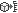
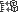

Kataloge werden nach folgenden Merkmalen unterschieden:
Standard- und Klassifikationskataloge
Standardkataloge haben eine frei definierbare Kategoriestruktur, um Produkte zu gruppieren. Klassifikationskataloge hingegen geben eine Kategoriestruktur vor, in die Produkte eingeordnet werden können. Außer den verfügbaren Kategorien legen sie auch Klassifikationsattribute fest. Klassifikationsattribute werden Produkten, die in eine bestimmte Katalogkategorie eingeordnet sind, automatisch zugewiesen. Intershop Commerce Management bietet direkte Unterstützung für Klassifikationskataloge nach eCl@ss- und UN/SPSC-Standard. Diese Kataloge werden vom zentralen Administrator geladen. Sie können von den Katalogverwaltern der Vertriebsorganisationen online oder offline gesetzt werden. Sie können jedoch nicht gelöscht werden. Katalogverwalter können zusätzlich benutzerdefinierte Klassifikationskataloge anlegen.
Freigegebene und lokale Kataloge
Kataloge können lokal vorhanden oder freigegeben sein. Freigegebene Kataloge sind Master-Kataloge, die für einen oder mehrere Channels freigegeben werden. Auf diese Kataloge können dann die Geschäftspartner, die diesen Channel benutzen, zugreifen. Freigegebene Kataloge ermöglichen die Verwendung einheitlicher, vordefinierter Katalogstrukturen über mehrere Channels hinweg.
Systemklassifikationskataloge
System-Klassifikationskataloge sind Mittel, um Produkte zu erstellen und zu gruppieren, die bestimmte Eigenschaften besitzen und deshalb anders behandelt werden müssen. Dies trifft auf Produkte zu wie Garantien, Geschenkverpackungen oder Downloads, die z. B. aus Suchindizes ausgeschlossen werden können, keinen Bestand benötigen etc.
| Attribut | Beschreibung |
|---|---|
| ExcludeFromSearchIndex | Alle Produkte der Kategorie werden nicht in den Suchindex eingeschlossen. |
| ExcludeFromShipping | Alle Produkte der Kategorie werden nicht in die Versandberechnung eingeschlossen. |
| HasNoInventory | Alle Produkte der Kategorie werden nicht in die Bestandsberechnung einbezogen, d.h. die Produkte sind immer verfügbar (z. B. Downloads). |
| IsNotOrderable | Alle Produkte der Kategorie können nicht einzeln bestellt werden, d.h. die Produkte können nur zusammen mit anderen Produkten bestellt werden (z. B. Garantien). |
Systemklassifikationskataloge werden nur bei Initialisierung der Datenbank erstellt und können nicht über das Commerce Management bearbeitet werden. Business-Manager können nur Produkte zu vordefinierten Systemklassifikationskategorien zuordnen. Die Produkte "erben" dann alle Eigenschaften, die für die bestimmten Kategorien definiert sind, sodass sie als Garantien, Geschenkverpackungen oder Downloads bereitstehen.
Für Kategorien in benutzerdefinierten Klassifikationskatalogen können Klassifikationsattribute festgelegt werden, um die Attribute der diesen Kategorien zugeordneten Produkte vorzudefinieren. Beim Zuordnen von Produkten in Klassifikationskategorien mit Klassifikationsattributen werden diese Attribute den Produktverwaltern in einer Liste angeboten. Hinweis: Der Produktverwalter muss Attributwerte festlegen, bevor die Attribute auf die Produkte übertragen werden. Nach der Übertragung auf ein Produkt sind die Attribute über das Register Attribute in der Produkt-Detailansicht verfügbar.
Die folgende Liste fasst die allgemeinen Produktmerkmale zusammen:
Allgemeine Produktinformation
Jedes Produkt hat zur Kennzeichnung im System einen Namen und eine eindeutige ID.
Produktattribute
Es gibt zwei Arten von Attributtypen: Standardattribute und benutzerdefinierte Attribute. Standardattribute gelten für alle Produkte. Mit benutzerdefinierten Attributen können produktspezifische Attribute definiert werden. Produktattribute können lokalisiert werden. Lokalisierbare Attribute legen Attributwerte fest, die an eine Locale (oder Sprache) gebunden sind.
Hinweis: Lokalisierbare Attribute werden unter Verwendung des Produktattributgruppen-Mechanismus definiert. Für weitere Informationen, siehe Produktattributgruppen.
Falls z. B. ein Produkt keinen lokalisierten Wert für ein benutzerdefiniertes Attribut besitzt, wird die entsprechende Locale kein Suchfeld für dieses Attribut enthalten. Das bedeutet, dass die Suche nach einem leeren Feld (<<none>>) nicht funktionieren kann, da das Feld nicht existiert. Weitere Informationen zu Suchoptionen, siehe Allgemeine Suchoptionen.
Kategoriezuordnungen
Ein Produkt kann mehreren Kategorien gleichzeitig zugeordnet sein. Über die erweiterte Suche lassen sich alle Produkte ermitteln, die aktuell einer Katalogkategorie zugeordnet sind oder nicht. Zusätzlich kann jedes Produkt in Standard-Klassifikationskataloge (wie eCl@ss oder UN/SPSC) oder benutzerdefinierte Klassifikationskataloge eingeordnet werden.
Anlagen
Jedes Produkt kann auf zusätzlichen produktrelevanten Content verweisen, der von Einkäufern angezeigt werden kann, wie z. B. Produktspezifikationen, Handbücher oder Informationsbroschüren. Der entsprechende Content muss zuerst in ein Content-Verzeichnis geladen werden, das dann beim Hinzufügen der Anlagen durchsucht werden kann. Informationen zum Anlegen von Content-Verzeichnissen und Laden von statischem Content finden Sie hier: Katalogimport und -export.
Standardmäßig sind alle in einem Channel definierten oder verfügbaren Produkt-Kataloge für alle Kunden in diesem Channel sichtbar. Kataloganzeigen ermöglichen dem Katalogadministrator des Channels, die Anzeige von Produktkatalog-Inhalten kunden- oder kundensegmentspezifisch zu steuern. Mit Kataloganzeigen lassen sich Produktkataloge entsprechend der spezifischen Bedürfnisse einzelner Kundensegmente personalisieren bzw. komplett ausblenden.
Das Anlegen einer Kataloganzeige beinhaltet die in der folgenden Abbildung gezeigten Schritte:
Kategorien oder Produkte anzeigen und ausblenden
Durch die Definition von Kataloganzeigen lassen sich Produktkatalogkategorien oder Produkte explizit sichtbar oder unsichtbar machen. Zu Beginn der Definition einer Kataloganzeige macht diese standardmäßig alle Kategorien unsichtbar. Sie müssen dann die Kategorien hinzufügen, die sichtbar sein sollen. Um lediglich Teile einer Kategorie anzuzeigen, machen Sie zunächst die Hauptkategorie sichtbar und schließen dann die Unterkategorien oder Produkte aus, die unsichtbar bleiben sollen.
Kunden/Kundensegmente einer Anzeige zuordnen
Ordnen Sie einen Kunden oder ein Kundensegment des aktuellen Channels der Kataloganzeige zu. Damit ist die Anzeige für alle Endkunden in dieser Zielgruppe aktiviert. Beachten Sie, dass ein Kunde oder ein Kundensegment mehreren Kataloganzeigen gleichzeitig zugeordnet sein kann. Wenn ein Kunde oder ein Kundensegment keiner Kataloganzeige zugeordnet ist, gelten keine Beschränkungen bei der Anzeige von Katalogen.
Sie können Kataloganzeigen zu Kunden oder Kundensegmenten zuordnen, auch während Kunden- oder Kundensegmentdetails bearbeitet werden, siehe
Kataloganzeige online setzen und anwenden
Damit eine Kataloganzeige angewendet werden kann, muss sie online gesetzt werden. Später müssen Kataloganzeigen aktualisiert werden, wenn neue Kategorien sichtbar oder unsichtbar gemacht werden bzw. wenn der Produktbestand aktualisiert wird. Es ist möglich, Kataloganzeigen in regelmäßigen Zeitabständen per Job anwenden zu lassen, um diese Aufgabe zu automatisieren. Der Seitencache wird automatisch invalidiert, sobald eine Kataloganzeige online gesetzt oder angewendet wird.
Sollten sich einzelne Definitionen von Kataloganzeigen widersprechen, haben Einstellungen für sichtbare Kategorien Vorrang gegenüber Einstellungen für nicht sichtbare Kategorien. Beispiel: Ein Kundensegment ist zwei Kataloganzeigen (A und B) zugeordnet. In Kataloganzeige A ist die Kategorie "Monitore" sichtbar, während sie in Kataloganzeige B nicht sichtbar ist. In diesem Fall ist diese Kategorie für das Kundensegment sichtbar, dem diese Kataloganzeige zugeordnet ist.
Über Produktfreigaben können Vertriebs- oder Partner-Organisationen größere Mengen von Masterprodukten an Channels verteilen ("Ausgehende Produktfreigabe"). Die Produkte werden nicht in die Ziel-Channel kopiert, sondern verbleiben im Master-Bestand der Stammorganisation.
Alle ableitenden Channels können die Stammdaten dabei unmittelbar mitbenutzen, unabhängig ihrer Hierarchie. Channel können aber über die Aktivierung von allen oder nur einem bestimmten Satz an Master-Produkten entscheiden ("Eingehende Produktfreigabe").
Weitere Informationen zum Verwalten der Eingehenden Produktfreigabe, siehe Eingehende Produktfreigabe verwalten.
Mit einer integrierten Suchmaschine dritter Anbieter (siehe Suchindex-Services) besitzt Intershop Commerce Management flexible Produktfilteroptionen. Katalogverwalter können Produktfilter vordefinieren. Vordefinierte Produktfilter sind dann verfügbar für die dynamische Zuordnung von Produkten zu Katalogkategorien oder das automatische Einfügen von Produkten in Seitenkomponenten, die z. B. als "Abschlussstücke" einer Kategorieseite angezeigt werden sollen.
Vordefinierte Produktfilter werden entweder direkt auf Kataloge/Kategorien angewendet (siehe Produkte mithilfe von Filtern zuordnen) oder durch die Zuordnung bestimmter, mit Produktfiltern versehener Kategorieseiten, siehe Katalog-Content-Ansichten verwalten.
Weitere Informationen zum Verwalten von Produktfiltern, siehe Produktfilter verwalten.
Der Produktstatus bezieht sich auf die Attribute online/offline und Verfügbarkeit.
Produkte können online oder offline sein. Ein Produkt, das offline gesetzt ist, wird in der Storefront nicht mehr angezeigt. Die Gültigkeit des Produktstatus kann festgelegt werden für immer, ab einem bestimmten Zeitpunkt oder für eine begrenzte Zeit. Der Produktstatus kann als Suchkriterium in der erweiterten Suche verwendet werden.
Die Verfügbarkeit zeigt an, ob ein Produkt auf Lager ist.
Produktstatusattribute können als Suchkriterien in der erweiterten Suche verwendet werden.
Beide Attribute werden geprüft, bevor eine Bestellung erzeugt wird. Wenn ein Produkt nach dem Hinzufügen zum Warenkorb/zur Bestellanforderung offline gesetzt wurde oder nicht mehr verfügbar ist, kann es nicht bestellt werden.
In Produktlisten wird der Produktstatus mit den in der folgenden Tabelle erklärten Symbolen dargestellt.
| Symbol | Beschreibung |
|---|---|
| Zeigt an, dass das Produkt online ist. | |
| Zeigt an, dass das Produkt offline ist. | |
| Zeigt an, dass das Produkt entsperrt ist, das heißt, es wird momentan nicht bearbeitet. | |
| Zeigt an, dass das Produkt für den aktuellen Benutzer gesperrt ist, das heißt, es wird momentan vom aktuellen Benutzer bearbeitet. | |
| Zeigt an, dass das Produkt für einen anderen Benutzer gesperrt ist, das heißt, es wird momentan von einem anderen Benutzer bearbeitet. | |
| Zeigt an, dass das Produkt auf Lager ist. | |
| Zeigt an, dass das Produkt angeboten wird, das heißt, es ist in einen Channel syndiziert, siehe Produktsyndizierung. | |
|  | Zeigt an, dass das Produkt explizit in eine Katalogkategorie eingebunden ist. |
|  | Zeigt an, dass das Produkt implizit in eine Katalogkategorie eingebunden ist. |
| Zeigt in zentralen Produktbeständen an, dass ein Produkt für einen Channel freigegeben ist. | |
| Zeigt in Channel-Produktbeständen an, dass ein Produkt von einem zentralen Produktbestand freigegeben ist. | |
| Zeigt in Channel-Produktbeständen an, dass ein Produkt von einem zentralen Produktbestand freigegeben und im Channel geändert worden ist. | |
| Zeigt an, dass von diesem Produkt Verweise zu anderen Produkten bestehen (zum Beispiel als Ersatzartikel). |
Zwei spezielle Attribute steuern den Produkt-Lebenszyklus.
Die letzte Bestellmöglichkeit legt den spätesten Zeitpunkt fest, an dem ein Produkt bestellt werden kann. Das Produkt bleibt in der Storefront sichtbar, kann aber nicht mehr in einen Warenkorb eingefügt werden.
Das End-of-Life-Datum hat den gleichen Effekt. Es kann zur Angabe zusätzlicher Informationen verwendet werden, z. B. dem Ende einer Supportfrist. Hinweis: Das End-of-Life-Datum muss, sofern es angegeben wird, nach der letzten Bestellmöglichkeit liegen.
Die Angaben zum Produkt-Lebenszyklus können als Suchkriterien in der erweiterten Suche verwendet werden.
Produktbündel (siehe Produktbündel und Retail-Sets) und Variations-Stammprodukte (siehe Produktvariationen und Produktvariationstypen) können die letzte Bestellmöglichkeit und das End-of-Life-Datum von den gebündelten Produkten bzw. ihren Variationsprodukten erben. Ist der Vererbungsmechanismus aktiviert, wird die letzte Bestellmöglichkeit/das End-of-Life-Datum für das Produktbündel oder das Variations-Stammprodukt automatisch auf die früheste letzte Bestellmöglichkeit/das früheste End-of-Life-Datum eines der enthaltenen Produkte gesetzt. Alternativ lassen sich die letzte Bestellmöglichkeit und das End-of-Life-Datum für Produktbündel oder Variations-Stammprodukte manuell festlegen.
In bestimmten Fällen wollen Händler die Produktdaten prüfen und, wenn sie den Qualitätsanforderungen genügen, ausdrücklich genehmigen. Zu diesem Zweck hat Intershop Commerce Management ein optionales Produkt-Genehmigungsverfahren.
Bezüglich der Produktgenehmigung sind die folgenden Details von Bedeutung:
Die Produktgenehmigung kann auf Channel-Ebene aktiviert/deaktiviert werden. Ist die Produktgenehmigung deaktiviert, werden die Genehmigungsstatusinformationen und die manuelle Genehmigungsfunktion verborgen.
Der Genehmigungsstatus hat keinen Einfluss auf die Sichtbarkeit von Produkten in der Storefront.
Es gibt drei Genehmigungsstatus: bearbeiten, prüfen und genehmigt.
| Status | Beschreibung |
|---|---|
| Bearbeiten | Das Produkt wird bearbeitet oder muss bearbeitet werden. |
| Prüfen | Die Produktdaten sind komplett und können geprüft werden. |
| genehmigte | Die Produktdaten sind geprüft und freigegeben. |
Ist die Produktgenehmigung aktiviert, kommen zwei Zugriffsrechte ins Spiel: Produktgenehmiger und Katalog- und Produktverwalter.
| Zugriffsrecht | Zuständigkeit bei Produktgenehmigungen |
|---|---|
| Produktgenehmiger | Produktgenehmiger sind verantwortlich für das Prüfen und Genehmigen der Produktdaten. Sie können folgende Genehmigungsstatus setzen: von "Prüfen" auf "Genehmigt" oder "Bearbeiten" sowie von "Genehmigt" auf "Bearbeiten". |
| Katalog- und Produktverwalter | Katalog- und Produktverwalter sind verantwortlich für das Bearbeiten der Produktinformationen ("Datenanreicherung"). Sie können den Genehmigungsstatus von "Bearbeiten" auf "Prüfen" setzen (und umgekehrt), aber sie haben kein Recht, Produktdaten zu genehmigen oder genehmigte Produkte zurückzusetzen. |
Das ermöglicht prinzipiell folgendes Vorgehen:
Beide Rollen können (je nach aktuellem Genehmigungsstatus) eine Änderung der Produktdaten anfordern, falls sie fehlende oder falsche Daten feststellen.
Katalog- und Produktverwalter bearbeiten die Daten entsprechend und fordern die Genehmigung an.
Produktgenehmiger prüfen und genehmigen die Daten.
Das Anlegen oder Importieren neuer Produkte bei bereits aktivierter Produktgenehmigung erfordert die Aktualisierung der entsprechenden Datenbankeinträge. Zu diesem Zweck hat Intershop Commerce Management den vorkonfigurierten Job "General Product Approval". Wenden Sie sich für das Planen bzw. Ausführen des Jobs an Ihren Intershop Commerce Management-Systemadministrator.
Für Informationen zu Produktgenehmigungseinstellungen, siehe Produktgenehmigung aktivieren.
Für Informationen zum Produktgenehmigungsprozess, siehe Produktgenehmigungen verwalten.
Produkt- und Katalogseiten von Channels enthalten spezielle Title- und Meta-Tags, die Intershop Commerce Management-basierte Storefront-Seiten für Internet-Suchmaschinen optimieren. Die Title- und Meta-Tag-Daten (Seitentitel, Meta-Beschreibung) werden als Attribute mit den Produkten, Katalogen und Kategorien gespeichert. Katalogverwalter können im Commerce Management auf diese SEO-Attribute über das Register Attribute der Produkt-, Katalog- und Kategorie-Detailansichten zugreifen. Für weitere Informationen, siehe SEO-Attribute für Produktseiten verwalten und SEO-Attribute für Katalog- und Kategorieseiten verwalten.
Folgende Page-Header-Tags werden unterstützt:
Seitentitel
Meta-Beschreibung
Die entsprechenden Header-Daten lassen sich
automatisch erzeugen,
automatisch erzeugen und mit Präfix/Suffix versehen oder
manuell editieren.
SEO-Attribute sind vollständig lokalisierbar.
Die Regeln für das automatische Erzeugen der Tag-Inhalte sind kontextabhängig. Das heißt, je nach betreffendem Objekt (Katalog/Kategorie oder Produkt) werden unterschiedliche Tag-Daten generiert. Der Standardinhalt ist nachfolgend beschrieben:
| Objekt | Tag-Inhalt |
|---|---|
| Katalog/Kategorie | Seitentitel: Kategoriename, Stammkategorie, Suffix für Titel |
| Beschreibung: Kategoriename, Unterkategorien, Spezielles | |
| Produkt | Seitentitel: Produktname, Kategorie, Suffix für Titel |
| Beschreibung: Produktname, Kurzbeschreibung |
Der Tag-Inhalt wird nach 256 Zeichen abgeschnitten.
Die Inhalte für Suffix für Kategorietitel, Kategorie-Spezielles, Suffix für Produkttitel sind konfigurierbare Text-Strings, die in globalen oder site-spezifischen Properties-Dateien gespeichert werden. Diese Dateien liegen in <IS.INSTANCE.SHARE>/system/config/cluster/seo) bzw. (<IS.INSTANCE.SHARE>/sites/<site>/<ID>/units/<channel_unit>/seo.
Die im Commerce Management-Dialog Suchmaschinenattribute angelegte oder editierte Title- oder Meta-Tag-Information wird im Storefront-Template ApplicationFrame gespeichert und später in die generierten Storefront-HTML-Seiten eingefügt.
SEO-Meta-Tags in der generierten HTML-Seite
<html lang="en"> <head> <meta name="robots" content="index,follow" /> <meta name="title" content="Computers - always special prices for Computers" /> <meta name="description" content="Computers, Monitors, Components, Notebook Accessories, Network, PDAs & Accessories, Printers & Scanners, PC Complete Packages, Software, Notebooks, PC Systems always special prices for Computers" /> ... </head>
Falls gewünscht kann Intershop Commerce Management spezifische Tags wie noindex und nofollow zu Storefront-Seiten hinzufügen. Diese Tags verhindern, dass diese Seiten indexieren bzw. Links auf diesen Seiten verfolgen. Diese Tags werden für Produkt- und Kategorieseiten im Rahmen der Produkt- und Katalogverwaltung gesetzt, für Seitenvarianten im Rahmen des Content-Management. Beachten Sie, dass das Setzen dieser Option für Seitenvarianten die eventuell getroffene Einstellung für Produkte oder Kategorien überschreibt.
Standardattribute und benutzerdefinierte Attribute eines Produkts können Produktattributgruppen zugewiesen werden. Produktattributgruppen bilden einen leistungsfähigen Mechanismus, um eine Metastruktur über große und komplexe Attributsätze zu legen. Produktattributgruppen können für verschiedene Zwecke verwendet werden, unter anderem:
Verwalten von Attributzuordnungsregeln bei Synchronisierungsprozessen
Attributzuordnungsregeln für Synchronisierungsprozesse können auf Attributgruppen basieren. Bei Auswahl einer Attributgruppe werden alle Attribute aus dieser Gruppe 1:1 kopiert.
Bereitstellen von lokalisierbaren Attributnamen
Beim Definieren von Attributen, die zu einer Attributgruppe gehören sollen, geben Sie einen Attributnamen und eine ID an. Unter dem Attributnamen wird das Attribut in der Arbeitsoberfläche angezeigt. Die ID wird vom System mit Standard- und benutzerdefinierten Attributen verglichen, um den entsprechenden Attributwert zu erhalten. Wenn die Attributwerte lokalisiert sind, wird der Wert für die entsprechende Locale geholt. Ist z. B. die Locale eines Benutzers Deutsch (de_DE), holt das System für die Anzeige den in der Attributgruppe definierten Attributnamen für Deutsch (de_DE) und den beim Produkt definierten Attributwert für Deutsch (de_DE).
Als Teil des Shopaufbaus konfiguriert die Vertriebs- oder Partnerorganisation die Produktbilder, die für mögliche, verschiedene Produktansichten in der Storefront verfügbar sind, wie z. B. Katalog-Listenansicht, Detailansicht oder Warenkorb-Ansicht.
Die Verwaltung von Bildern besteht aus folgenden Aufgaben:
Bilder hochladen
Bilddateien, die als Produktbilder verwendet werden sollen, müssen in das Intershop Commerce Management-System hochgeladen werden. Bevor die Dateien letztlich hochgeladen werden, ist es möglich, eine zugehörige Verzeichnisstruktur zu erzeugen, um die geladenen Inhalte zu speichern und zu verwalten.
Bildanzeigen verwalten
Eine Bildanzeige bestimmt die Perspektive oder den Kontext, in dem ein Produkt auf einem Bild dargestellt wird. Jede dieser Anzeigen kann je nach Bildtyp in mehreren Dimensionen verfügbar sein.
Organisationen können eine primäre Bildansicht festlegen, welche als Standard verwendet wird, wenn auf Produktebene keine andere Ansicht als primär festgelegt wird.
Bildtypen verwalten
Ein Bildtyp wird verwendet, um die individuellen Bilder zu typisieren, die für eine bestimmte Bildansicht verfügbar sind. Der Typ kann nach verschiedenen Größen (z. B. Zoom, Standard, Vorschaubild), nach Qualitäten (z. B. niedrig, mittel, hoch extern) oder nach MME-Typen (z. B. gif, png, tiff) unterscheiden.
Neben der primären Bildansicht (oder, falls vorhanden, vordefinierten Bildsets) können Katalogverwalter zusätzliche Kombinationen aus Bildanzeige und -typ verbinden, die sie z. B. für den Einsatz auf Produktdetailseiten verfügbar machen.
Bildsets verwalten
Mit Bildsets können Bildanzeigen und Bildtypen kombiniert werden. Diese Kombinationen können dann einfach Produktklassifikationen zugeordnet werden oder von entsprechend erstellten Content-Komponenten verwendet werden.
Weitere Informationen zur Verwaltung von Bildern, siehe Produktbilder verwalten.
Intershop Commerce Management bietet einen leistungsfähigen und flexiblen Mechanismus zur Verwaltung von Produktpreisen mit Listenpreisen, Einstandspreisen und Preislisten für kundenspezifische Staffelpreise.
Jedes Produkt hat einen Listenpreis. Der Listenpreis ist ein fester, von der Bestellmenge unabhängiger einfacher Preis. Für jede im System verfügbare Währung kann ein separater Listenpreis festgelegt werden. Der Listenpreis dient als Grundlage für die Berechnung anderer Produktpreise, wie z. B. zur Berechnung von Staffelpreisen in Preislisten.
Optional kann für jedes Produkt ein Einstandspreis - ebenfalls separat für jede im System verfügbare Währung - definiert werden. Vertriebs- und Partnerorganisationen können den Einstandspreis dazu verwenden, die Kosten für die Beschaffung eines Produkts vom Lieferanten oder der Stammorganisation darzustellen. Auf Basis des Einstandspreises lassen sich verschiedene Szenarien realisieren, in denen sich der Produkt-Listenpreis durch Addieren eines festen oder prozentualen Zuschlags oder durch Abzug eines Rabatts errechnet. So kann als Listenpreis z. B. Einstandspreis plus 10% (gewünschte Gewinnspanne) festgelegt werden.
Listenpreis und Einstandspreis können auf verschiedene Weise verwaltet werden: über das Register Preise in der Produktdetailansicht oder über den Preislisten-Manager.
Zwei Preislisten sind voreingestellt verfügbar: die Standardpreisliste, die alle Produkte mit ihren jeweiligen Listenpreisen enthält, und die Einstandspreisliste, die alle Produkte mit definierten Einstandspreisen enthält. Diese Listen gestatten direkten Zugriff auf die Produktpreise und erleichtern so das Verwalten von Listen- und Einstandspreisen für Produkte.
Produktpreise werden in der Datenbank mit zwei Nachkommastellen gespeichert. Es ist jedoch auch möglich, Preise mit höherer Genauigkeit, z. B. drei Nachkommastellen, zu definieren. Weitere Informationen und Hilfe erhalten Sie beim Intershop Support.
Bei der Syndizierung von Produkten stehen verschiedene Optionen für die Zuordnung und Neuberechnung von Listen- und Einstandspreisen zur Verfügung. Die verfügbaren Optionen hängen davon ab, ob die Syndizierung Produktbestände verschiedener Organisationen betrifft (z. B. Syndizierung aus dem Channel-Produktbestand von Organisation A in den zentralen Produktbestand der Partnerorganisation B), oder ob die Syndizierung Produktbestände nur einer Organisation betrifft (z. B. Syndizierung aus dem zentralen Produktbestand in einen Channel-Produktbestand).
Die nachfolgenden Zuordnungsregeln stehen für die Syndizierung aus Produktbeständen anderer Organisationen zur Verfügung. Sie können angewendet werden, wenn z. B. die Vertriebsorganisation Produkte vom Lieferanten in ihren zentralen Produktbestand syndiziert, oder wenn eine Partnerorganisation Produkte von ihrer Stammorganisation syndiziert.
Listenpreis kopieren
Diese Regel kopiert den Listenpreis vom Originalprodukt zum abgeleiteten Produkt. Optional lässt sich der Listenpreis durch Addieren eines festen oder prozentualen Zuschlags bzw. durch Abzug eines festen oder prozentualen Rabatts modifizieren.
Preis in andere Währung umrechnen
Diese Regel kopiert den Listenpreis vom Originalprodukt zum abgeleiteten Produkt und rechnet ihn mit den zentral für das System definierten Wechselkursen in eine andere Währung um. Optional lässt sich der Listenpreis durch Addieren eines festen oder prozentualen Zuschlags bzw. durch Abzug eines festen oder prozentualen Rabatts modifizieren.
Listenpreis als Einstandspreis verwenden
Diese Regel kopiert den Listenpreis des Originalprodukts als Einstandspreis des abgeleiteten Produkts. Hinweis: Mit dieser Regel erhält das abgeleitete Produkt keinen Listenpreis.
Listenpreis als Einstandspreis verwenden und in andere Währung umrechnen
Diese Regel kopiert den Listenpreis des Originalprodukts als Einstandspreis des abgeleiteten Produkts und rechnet ihn mit den zentral für das System definierten Wechselkursen in eine andere Währung um.
Beim Syndizieren aus dem zentralen Produktbestand in einen Channel-Produktbestand, d.h. bei der Syndizierung innerhalb einer Organisation, sind zusätzliche Zuordnungsregeln für Zuschlagskalkulationen verfügbar:
Listenpreis aus Einstandspreis ermitteln
Diese Regel berechnet den Listenpreis des abgeleiteten Produkts auf Basis des Einstandspreises des Originalprodukts. Der Einstandspreis kann wie vorgegeben gewählt werden oder durch Addieren eines festen oder prozentualen Zuschlags bzw. durch Abzug eines festen oder prozentualen Rabatts modifiziert werden.
Listenpreis aus Einstandspreis ermitteln und in andere Währung umrechnen
Diese Regel berechnet den Listenpreis des abgeleiteten Produkts auf Basis des Einstandspreises des Originalprodukts und rechnet ihn mit den zentral für das System definierten Wechselkursen in eine andere Währung um. Der Einstandspreis kann wie vorgegeben gewählt werden oder durch Addieren eines festen oder prozentualen Zuschlags bzw. durch Abzug eines festen oder prozentualen Rabatts modifiziert werden.
Zusätzlich zu den Listenpreisen können Channel-Administratoren Spezialpreislisten für Channel-Produkte definieren.
Spezialpreislisten werden zu folgenden Zwecken verwendet:
Staffelpreise definieren
Die in Preislisten enthaltenen Preise sind Staffelpreise. Ein Staffelpreis kann in Abhängigkeit von der Bestellmenge variieren. Staffelpreise können dabei als Festpreis (z. B. 12,99 EUR) oder als prozentualer Rabatt gestaltet werden (z. B. 10%). Sie können für jede unterstützte Währung einen separaten Staffelpreis für jede Bestellmenge festlegen.
Kundenspezifische Preise definieren
Preislisten ermöglichen die Festlegung von Spezialpreisen für bestimmte Kunden oder Kundensegmente. Beim Einrichten von Preislisten lässt sich festlegen, für welche Zielgruppe d.h. Kunden oder Kundensegmente die Preisliste gelten soll. Damit sind die Preise aus einer Preisliste nur für die Benutzer wirksam, die zu der der Preisliste zugeordneten Zielgruppe gehören.
Sie können Preislisten zu Kunden oder Kundensegmenten zuordnen, auch während Kunden- oder Kundensegmentdetails bearbeitet werden.
Zeitlich begrenzte Preise definieren
Für jede Preisliste kann ein Gültigkeitsbeginn und ein Gültigkeitsende festgelegt werden. Preislisten können also spezielle Preise für einen bestimmten begrenzten Zeitraum definieren.
Das Produkt im folgenden Beispiel definiert zwei verschiedene Preise für die Preislisten "Bestpreis-Angebote" und "Weihnachts-Kampagne". Der für die Preisliste "Weihnachts-Kampagne" definierte Preis ist kundenspezifisch, da diese Preisliste nur für Mitglieder des Kundensegments "Premium-Kunden" gültig ist.
Zwei Preislisten sind voreingestellt verfügbar: die Standardpreisliste, die alle Produkte mit ihren jeweiligen Listenpreisen enthält, und die Einstandspreisliste, die alle Produkte mit definierten Einstandspreisen enthält. Diese Listen gestatten direkten Zugriff auf die Produktpreise und erleichtern so das Verwalten von Listen- und Einstandspreisen für Produkte.
Falls ein Benutzer Mitglied mehrerer Kundensegmente ist, könnte ihm unter bestimmten Umständen mehr als ein Preis angeboten werden. Um solche Konflikte zu lösen, bietet Intershop Commerce Management zwei Strategien zur Preisfindung:
Sind für einen Channel mehrere Preislisten definiert, legt der Channel-Administrator eine Rangfolge für diese Preislisten fest. Entsprechend dieser konfigurierbaren Preisfindung prüft das System in der festgelegten Reihenfolge alle vorhanden Preislisten, bis ein passender Preis ermittelt ist.
Mit der Bestpreis-Strategie hingegen wählt das System aus allen für den Benutzer gültigen Preislisten den besten Preis aus, unabhängig von der Preislisten-Rangfolge.
Staffelpreise und Preislisten können nicht zwischen Produktbeständen syndiziert werden.
In Datenreplizierungs-Umgebungen können Katalogverwalter Preislisten aus dem Bearbeitungssystem in das Zielsystem detailliert veröffentlichen. Zu diesem Zweck veröffentlichen sie zunächst die gewünschte Preisliste in das Zielsystem. Danach wählen sie die zu replizierenden Preise einzeln aus und veröffentlichen sie.
Für weitere Informationen, siehe Preislisten publizieren.
Allgemein verlangen die verschiedenen Geschäftsszenarien, die Preise entweder als Netto- oder als Bruttopreise anzugeben. Abhängig von den mit den Produktdaten gespeicherten Preistypen (netto oder brutto) werden manche Berechnungen angewendet, um die Preise korrekt gemäß dem beabsichtigten Geschäftsmodell anzuzeigen, d.h. entweder ohne Mehrwertsteuer oder einschließlich Mehrwertsteuer. Dazu bietet Intershop Commerce Management einen starken Preis-/Steuerberechnungsmechanismus sowie flexible Konfigurationsoptionen.
Die hier genannten Einstellungen und somit auch die dazugehörigen Berechnungen beeinflussen die Produktpreise (einschließlich. Gewährleistungen und Geschenkverpackung), Versand, Zuschläge und Kosten des Zahlungsvorganges sowie aktionsbasierte Rabatte.
Bezüglich der Bestimmung von Netto-/Brutto-Preisen sind die folgenden Details von Bedeutung:
Preistyp
Bestimmt den Preistyp (netto oder brutto) wie im Datenbestand festgehalten. Muss als Teil der Preiseinstellungen festgelegt werden, siehe Preiseinstellungen verwalten.
Preisanzeige
Spezifiziert individuell für jeden Kundentyp, ob die Storefront-Preise diesem Kundentyp als Netto- oder Bruttopreise angezeigt werden. Muss als Teil der Preiseinstellungen festgelegt werden, siehe Preiseinstellungen verwalten.
Steuerberechnungsservice
Berechnet die mögliche Differenz zwischen dem gegebenen Preistypen (netto oder brutto) und der ausgewählten Preisanzeige-Einstellung (netto oder brutto) und überträgt die zutreffenden steuerlichen Daten auf alle folgenden Prozesse.
Intershop Commerce Management bietet zwei Standard-Services (Produkt-MwSt. ausschließlich Besteuerung und Produkt-MwSt. einschließlich Steuer), die den Netto- oder den Bruttopreis für Anzeigezwecke festlegen, siehe Steuerberechnungsservices verwalten. Weitere Steuerberechnungsdienste (benutzerdefiniert oder von Dritten) können auf einer projektspezifischen Basis implementiert werden.
Steuerklasse
Produktspezifische Einstellung, die festlegt, welche Steuerklasse angewendet wird und beim Steuerberechungsdienst benutzt werden muss. Kann als Teil der Preiseinstellung festgelegt werden, siehe Produkt-Listenpreise und Einstandspreise verwalten.
Standardmäßig möglich sind volle, reduzierte oder keine Steuer. Die verfügbaren Steuerklassen können vom Zentraladministrator eingesetllt werden.
Beachten Sie, dass Intershop Commerce Management bei der Berechnung von Netto- oder Bruttopreisen andere Steuerdaten wie Steuerrecht, Steuerklassen, Steuersätze usw. verwendet, die vom Systemadministrator festgelegt wurden. Für detaillierte Beschreibung zur Konfiguration von Steuerdaten für Systemadministratoren, siehe Guide - Locales, Tax Data, Currencies and Exchange Rates.
In der folgenden Tabelle sind die möglichen Szenarien im Hinblick auf Preistyp und Preisanzeige aufglistet sowie die (Standard) Steuerberechnungsservice wird entsprechend angewandt.
| Preistyp | Preisanzeige | Service | |
|---|---|---|---|
| A | netto | netto | Produkt Mwst. ausschließlich Steuern |
| B | netto | brutto | Produkt Mwst. ausschließlich Steuern |
| C | brutto | netto | Produkt Mwst. einschließlich Steuern |
| D | brutto | brutto | Produkt Mwst. einschließlich Steuern |
Stellen Sie sicher, dass Sie immer den enstpechenden Steuerberechnungsdienst zum Preistyp atkvieren, auch wenn das nicht für die Berechnung des Anzeigepreises nötig ist (Szenarien A und D oben). Abgesehen davon, dass diese Dienste die Netto- und Bruttopreise bestimmen, vereinfachen sie auch andere steuerliche Daten (Steuerrecht, Steuersatz, usw.) für jeden Folgeprozess.
Prinzipiell gibt es verschiedene Möglichkeiten, die Reihenfolge zu bestimmen, in der Produkte oder Unterkategorien von Katalogen in der Storefront angezeigt werden.
Sortierung auf Basis vordefinierter Produktfilter
Sortierung auf Basis spezifischer Sortierattribute
manuelle Sortierung
Wenn Sie Katalogkategorien dynamisch mit Produkten unter Verwendung vordefinierter Produktfilter befüllen (siehe Vordefinierte Produktfilter), verwenden Sie diese Filter üblicherweise auch für die Sortierung. Vordefinierte Produktfilter werden entweder direkt auf Kataloge/Kategorien angewendet (siehe Produkte mithilfe von Filtern zuordnen) oder durch die Zuordnung bestimmter, mit Produktfiltern versehener Kategorieseiten, siehe Katalog-Content-Ansichten verwalten.
Die Verwendung vordefinierter Produktfilter erfordert einen von einer Suchmaschine eines Drittanbieters gesteuerten Suchindex, siehe Suchindex-Services.
Der Standardfilter, der, sofern Sie keine anderen Festlegungen treffen, auf alle Kategorien über die als Vorgabe definierte Kategorieseite angewendet wird, legt Nach Preis (aufsteigend) als Suchkriterium fest. Falls Ihre Produktfilter keine Kriterien für die Produkt- oder Kategoriesortierung definieren, können Sie die Sortierung auf verschiedenen Ebenen mit Hilfe von Attributen steuern, siehe Sortierung mit Attributen.
Sortiereinstellungen auf Basis vordefinierter Produktfilter heben sämtliche anderen channel- oder katalog-/kategoriespezifischen bzw. manuellen Einstellungen auf.
Sie können Produkte manuell Katalogkategorien zuordnen (siehe Produkte zuordnen), was keine vordefinierten Produktfilter erfordert. In diesem Fall können Sie die Anzeigereihenfolge für Produkte und Kategorien mit Produkt- oder Kategorieattributen steuern, die als Sortierattribute deklariert werden.
Die Standardsortierattribute sind Produktname, Produkt-ID, Listenpreis und Herstellername. Darüber hinaus können benutzerdefinierte Sortierattribute festgelegt werden.
Wenn ein Sortierattribut festgelegt wurde, werden die Produkte und Kategorien je nach Attributwert in aufsteigender oder absteigender Reihenfolge sortiert. Produkte oder Kategorien, die über keinen Wert für das Sortierattribut verfügen, werden automatisch an das Ende der Liste verschoben.
Sortiereinstellungen können auf drei Ebenen definiert werden:
Allgemeine Sortiereinstellungen
Für Produkt- und Kategoriesortierung können Sie als Channel-Einstellung ein Sortierattribut festlegen, das als Standard- oder Ausweichattribut in allen Katalogen dient, siehe Sortierungs-Einstellungen verwalten. Diese Voreinstellung des Channels lässt sich auf Katalog- bzw. Kategorieebene überschreiben, indem für den Katalog oder eine bestimmte Kategorie ein spezifisches Sortierattribut festgelegt wird (siehe unten).
Katalogspezifische Sortierung
Für jeden Katalog können Sortierattribute für Kategorien und Produkte definiert werden. Diese Sortierdefinition wird dann auf alle Kategorien und Produkte im Katalog angewendet. Die katalogspezifische Sortiereinstellung hat dabei Vorrang vor den allgemeinen Channel-Sortiereinstellungen. Für weitere Informationen, siehe Sortierattribut verwalten.
Kategoriespezifische Sortierung
Neben dem Standardattribut können Sie Sortierattribute individuell für jede Katalogkategorie festlegen. Die kategoriespezifische Sortiereinstellung hat dabei Vorrang vor den Einstellungen auf Katalogebene und den allgemeinen Einstellungen. Für weitere Informationen, siehe Sortierattribut verwalten.
Kategoriespezifische Sortiereinstellungen gelten nur für die Kategorie, für die sie definiert wurden. Sie werden nicht an Unterkategorien vererbt.
Die Benutzung von Sortierattributen ist unabhängig von einem von einer Suchmaschine eines Drittanbieters gesteuerten Suchindex, siehe Suchindex-Services. Wenn Sie einen Suchindex für Produktsuchen in der Storefront benutzen, müssen Sie den Index nach einer Modifizierung der Sortiereinstellungen aktualisieren, damit die Änderungen in der Storefront sichtbar werden. Der Suchindex muss das gewählte Sortierattribut enthalten. Sollen Produkte innerhalb einer Kategorie z. B. nach Farbe (= benutzerdefiniertes Attribut) sortiert werden, muss das Attribut Farbe "indexiert" und "sortierbar" sein, siehe Suchindizes verwalten.
Zusätzlich zur automatischen Sortierung mit Sortierattributen können Katalogkategorien und Produkte auch manuell sortiert werden. Für weitere Informationen, siehe Manuelle Sortierung.
Die manuelle Sortierung überschreibt die Sortiereinstellungen auf Basis von Sortierattributen, siehe Sortierung mit Attributen.
Die manuelle Sortierung ist unabhängig von einem von einer Suchmaschine eines Drittanbieters gesteuerten Suchindex, siehe Suchindex-Services. Wenn Sie einen Suchindex für Produktsuchen in der Storefront benutzen, müssen Sie den Index nach einer Modifizierung der Sortiereinstellungen aktualisieren, damit die Änderungen in der Storefront sichtbar werden. Dem Suchindex muss das Attribut Kategorieposition. Dieses Attribut fügt dem Suchindex die Information über die Position eines Produkts in einer Kategorie (bei manueller Sortierung von Produkten in der Kategorie) zu.
In Intershop Commerce Management stellen Garantien, Geschenkverpackungen und Geschenknachrichten spezielle Produkte dar, die spezifische Eigenschaften haben, wie z. B. nicht einzeln lieferbar oder ohne Produktbestand. Garantien, Geschenkverpackungen und -nachrichten werden in zugehörigen Systemklassifikationskategorien zusammengefasst, die die entsprechenden Eigenschaften zu diesen Produkten bei Erstellung einer Zuordnungsrelation übertragen.
Systemklassifikationskategorien werden nur bei Initialisierung der Datenbank erstellt und können nicht über das Commerce Management bearbeitet werden, siehe Katalogtypen.
Da Garantien nur in Kombination mit "echten" Produkten verkauft werden sollen, besitzen sie spezifische Preis-Optionen (siehe unten).
| Option | Beschreibung |
|---|---|
| Festpreis | Wird benutzt, um einen Festpreis für den Preis der Garantie festzulegen. |
| Prozente | Der Garantie-Preis richtet sich nach dem Produktpreis. Er wird prozentual auf Basis des Listenpreises des Produkts berechnet, auf den sich die Garantie bezieht. |
| Staffelpreise | Der Garantie-Preis richtet sich nach dem Produktpreis. Dieser Preistyp verwendet "Klammern", um die Wertebereiche zu definieren,
für die spezifische Garantie-Preise anwendbar sind.
|
Die Steuer für eine Garantie wird auf Grundlage des Produkts berechnet, für das die Garantie gelten soll.
Eine Produktvariation repräsentiert ein Produkt, das in verschiedenen Varianten angeboten wird. Die angebotenen Varianten teilen die meisten Attributwerte, unterscheiden sich jedoch in einigen Attributen. Ein Computer kann z. B. für die Attribute "Prozessortakt" oder "Festplattenkapazität" unterschiedliche Werte haben. Jede Produktvariante kann eine eigene SKU, einen eigenen Preis oder andere Attribute wie z. B. Bilder und Spezifikationen haben.
Produktvariationen bestehen aus
einem Variations-Stammprodukt
mehreren Variationsprodukten
Ab Intershop Commerce Management 7.9 funktionieren Produkt-Master-Seiten, die zuvor nur ein Standard-Produkt anzeigten, wie eine Produktfamilienseite, die die Produktvariationen als filterbare Liste präsentiert. Dieses Funktion beeinflusst auch die Darstellung von Master-Produkten in Produktlisten / Kategorielisten.
Für grundlegende Informationen, siehe Produkt-Master Detailseite.
Das Variations-Stammprodukt und die Variationsprodukte sind insofern Standardprodukte, als sie alle Standard- und benutzerdefinierte Attribute, Preise, Anlagen usw. haben können. Hinweis: Die Attributwerte des Variations-Stammprodukts und die Attribute der Variationsprodukte sind unabhängig voneinander.
Produktvariationen basieren auf einem Variationsmodell. Das Variationsmodell definiert
Variationsattribute
Das sind die gemeinsamen Attribute von Variations-Stammprodukt und Variationsprodukten.
Mögliche Attributwerte
Produktvariationen aus bestehenden Produkten im Produktbestand können angelegt werden, indem man zuerst ein Variationsmodell für ein Produkt, das als Variations-Stammprodukt fungieren soll, festlegt und dann die Variationsprodukte aus dem Produktbestand auswählt. Es ist auch möglich, Variationsprodukte auf Grundlage von Variationstypen automatisch zu erzeugen. Produktvariationstypen geben ein Variationsattribut und mögliche Attributwerte vor. Beim Erzeugen von Variationsprodukten auf Basis von Variationstypen wird für jedes entstehende Attribut-Wert-Paar ein Variationsprodukt angelegt. Beispiel: Beim Festlegen eines Variationstyps mit dem Attribut "Prozessortakt" mit zwei möglichen Werten ("3 GHz" und "3,4 GHz") werden zwei Variationsprodukte erzeugt.
Attribute des Variations-Stammprodukts
Diese Attribute werden auf den gleichen Wert gesetzt, den sie im Variations-Stammprodukt haben. Als SKU wird eine neue SKU gesetzt, die willkürlich aus der SKU des Variations-Stammprodukts gebildet wird.
Variationsattribute aus dem Variationstyp
Für jeden möglichen Attributwert wird ein eigenes Variationsprodukt gebildet.
Es ist auch möglich, Variationsprodukte auf Grundlage von mehreren Variationstypen gleichzeitig automatisch zu erzeugen. Werden z. B. Variationsprodukte auf Basis von variation_type_A (mit dem Attribut "Prozessortakt" und "3 GHz" und "3,4 GHz" als möglichen Werten) und variation_type_B (mit dem Attribut "Festplattenkapazität" und "120 GB" und "200 GB" als möglichen Werten) angelegt, entstehen dabei vier Variationsprodukte: zwei Produkte mit dem Wert "3 GHz" für "Prozessortakt" und "120 GB" bzw. "200 GB" als jeweilige Werte für "Festplattenkapazität" und zwei Produkte mit dem Wert "3,4 GHz" für "Prozessortakt" und "120 GB" bzw. "200 GB" als jeweilige Werte für "Festplattenkapazität".
Für weiterführende Informationen zu Produktvariationen , siehe Concept - Product Variations.
Für weitere Informationen zur Verwaltung von Variationsprodukten, siehe Produktvariationen verwalten.
Ein Produktbündel ist ein Paket von Produkten, die unter einer eigenen SKU und mit einem Paketpreis angeboten werden. Produktbündel sind dafür vorgesehen, als Ganzes bestellt zu werden, und erscheinen im Einkaufs-Frontend als ein Artikel. Die einzelnen Produkte im Bündel ("gebündelte Produkte") können selbst Bündel sein. Produktbündel können wie normale Produkte exportiert und importiert werden.
Ein Retail-Set ähnelt dem Produktbündel. Ein Retail-Set kombiniert Produkte, die gemeinsam auf einer Storefront-Seite angeboten werden sollen, als Produktgruppe. Typischerweise kann die gesamte Produktgruppe mit einem Klick in den Warenkorb gelegt werden. Im Unterschied zu Produktbündeln haben Retail-Sets jedoch keinen Gesamtpreis. Beim Bestellen eines Retail-Sets wird dessen Gesamtpreis aus den Preisen der einzelnen Produkte berechnet. Die einzelnen Produkte im Retail-Set können selbst Retail-Sets sein. Retail-Sets können wie normale Produkte exportiert und importiert werden.
Katalogverwalter können statische Links zwischen Produkten und/oder Katalogkategorien definieren, um Beziehungen zwischen Produkten und Kategorien zu bestimmen. Die folgenden Link-Beziehungen sind möglich:
Produkt - Produkt
Produkt - Kategorie
Kategorie - Produkt
Kategorie - Kategorie
Bei der Arbeit mit Katalogkategorien oder Produkten können Katalogmanager sowohl ausgehende als auch eingehende Links festlegen. Ausgehende Links definieren ein anderes Produkt oder eine Kategorie als "Verweisziel" und eingehende Links legen die aktuelle Kategorie als "Verweisziel" eines anderen Produktes oder einer Kategorie fest.
In Abhängigkeit von der Art der vorgesehenen Beziehung sind verschiedene Verweise möglich. Intershop Commerce Management bietet direkte Unterstützung für die folgenden Verweistypen:
| Verweistyp | Beschreibung |
|---|---|
| Ersatzartikel | Ersatzartikel für ein Produkt anbieten. Ersatzartikel können angezeigt werden, wenn das angefragte Produkt momentan nicht auf Lager ist. |
| Cross-Selling | Verwandte Artikel anbieten. In der Storefront werden in Abhängigkeit von den Artikeln im Warenkorb des Einkäufers die Cross-Selling-Produkte auf der Warenkorb-Seite angezeigt. |
| Up-Selling | Alternative Produkte anbieten, z. B. ähnliche, zu einem anderen Preis angebotene Produkte. In der Storefront werden die Up-Selling-Produkte unter der Überschrift "Das haben andere Kunden gekauft" auf der Produktdetail-Seite angezeigt. |
| Zubehör | Ergänzungsprodukte anbieten, z. B. einen Monitor für einen Desktop-Computer. In der Storefront werden die Zubehör-Produkte unter der Überschrift "Zubehör" auf der Produktdetail-Seite angezeigt. |
| Nachfolgeartikel | Neuere Versionen eines momentan ausgewählten Produkts anbieten. In der Storefront werden die Nachfolgeversionen unter der Überschrift "Neuere Versionen" auf der Produktdetail-Seite angezeigt. |
| Alternative Bestelleinheit | Gleiche Produkte mit unterschiedlichen Bestelleinheiten (z. B. Packungsgrößen) anbieten. In der Storefront werden die Produkte mit anderen Bestelleinheiten auf der Produktdetail-Seite unter der Überschrift "Auch verfügbar als" angezeigt. |
| Ersatzteile | Verfügbare Ersatzteile für ein Produkt anbieten. In der Storefront werden die Ersatzteile auf der Produktdetail-Seite als Verweise auf die Seiten des jeweiligen Ersatzteils angezeigt. |
| Geschenkverpackung | Verfügbare "Geschenkverpackungen" für ein Produkt anbieten. |
| Geschenknachricht | Verfügbare "Geschenknachrichten" für ein Produkt anbieten. |
| Garantie | Erzeugt eine Garantiebeziehung zwischen dem aktuellen Produkt und einem "Garantie"-Produkt. |
| Andere | Dieser Verweistyp hat keine vordefinierte Semantik und wird derzeit in den Beispiel-Storefronts nicht verwendet. |
| Verweistyp | Beschreibung |
|---|---|
| Cross-Selling | Verwandte Artikel anbieten. In der Storefront werden in Abhängigkeit von den Artikeln im Warenkorb des Einkäufers die Cross-Selling-Produkte auf der Warenkorb-Seite angezeigt. |
| Up-Selling | Alternative Produkte anbieten, z. B. ähnliche, zu einem anderen Preis angebotene Produkte. In der Storefront werden die Up-Selling-Produkte unter der Überschrift "Das haben andere Kunden gekauft" auf der Produktdetail-Seite angezeigt. |
| Zubehör | Ergänzungsprodukte anbieten, z. B. einen Monitor für einen Desktop-Computer. In der Storefront werden die Zubehör-Produkte unter der Überschrift "Zubehör" auf der Produktdetail-Seite angezeigt. |
| Nachfolgeartikel | Neuere Versionen eines momentan ausgewählten Produkts anbieten. In der Storefront werden die Nachfolgeversionen unter der Überschrift "Neuere Versionen" auf der Produktdetail-Seite angezeigt. |
| Ersatzteile | Verfügbare Ersatzteile für ein Produkt anbieten. In der Storefront werden die Ersatzteile auf der Produktdetail-Seite als Verweise auf die Seiten des jeweiligen Ersatzteils angezeigt. |
| Andere | Dieser Verweistyp hat keine vordefinierte Semantik und wird derzeit in den Beispiel-Storefronts nicht verwendet. |
Als "Produktzuordnung" bezeichnet man die (logische) Zuordnung eines Produkts zu einer Katalogkategorie. Durch Produktzuordnung werden Produkte zu Einträgen in Katalogen.
Die Produktzuordnung kann entweder manuell oder dynamisch ausgeführt werden:
Manuelle Zuordnung
Manuelle Zuordnung bedeutet, dass Kategorie-Produkt-Verbindungen explizit bei der Bearbeitung eines Produkts oder einer Kategorie erzeugt werden.
Dynamische Zuordnung
Bei der dynamischen Zuordnung können die Verbindungen zwischen Kategorie und Produkt auf Grundlage von Produktfiltern automatisiert werden, siehe Vordefinierte Produktfilter.
Produktfilter benötigen eine integrierte Suchmaschine dritter Anbieter, siehe Suchindex-Services.
Für weitere Informationen zur manuellen Produktzuordnung, siehe Produkte in Katalogkategorien verwalten.
Für weitere Informationen zur dynamischen Produktzuordnung, siehe Produkte mithilfe von Filtern zuordnen.
Produkte können mit einfacher Suche, erweiterter Suche oder Klassifikationssuche gesucht werden.
Einfache Suche
In der einfachen Suche können Sie mit einem einzelnen Suchwort nach einem Produkt suchen. Hierbei werden Produktnamen und -IDs in jedem Katalog nach dem Suchwort durchsucht.
Erweiterte Suche
Mit der erweiterten Suche können Sie durch die Angabe exakter Suchkriterien gezielter suchen. Sie können beispielsweise nach einem bestimmten Produktnamen, einer Produkt-ID, einem Herstellernamen oder einer Preisspanne suchen.
Klassifikationssuche
Die Klassifikationssuche ist eine besondere Form der erweiterten Suche. Sie dient in erster Linie dazu, mit bestimmten Klassifikationsattributen als Suchkriterien zu suchen, siehe Klassifikationsattribute.
Einen Überblick über gängige Suchoptionen, siehe Allgemeine Suchoptionen.
Bestimmte Operationen, die oft auf mehrere Produkte angewendet werden (z. B. Aktualisieren von benutzerdefinierten Attributen oder Löschen von Produkten), können mit allen Produkten im Suchergebnis im Batch-Modus ausgeführt werden.
Alle Änderungen am Produktbestand werden vom System protokolliert und können in der Produkthistorie angezeigt werden. Die Produkthistorie wird verwendet, um
Änderungen im aktuellen Produktbestand (zentraler oder Channel-Produktbestand) zu protokollieren,
Änderungen im Ausgangsverzeichnis für Syndizierungen zu protokollieren.
Das kann der zentrale Produktbestand der aktuellen Organisation oder ein Produktbestand der Stammorganisation sein. Für weitere Informationen zu möglichen Syndizierungsquellen, siehe Produktsyndizierung.
Änderungen werden beim Bearbeiten eines Produkts protokolliert
in Commerce Management
bei Produktsyndizierung und Synchronisierung
bei Stapelprozessen mit Produkten
Die Produkthistorie enthält Informationen über hinzugefügte, aktualisierte und gelöschte Produkte. Bei aktualisierten Produkten werden alle aktualisierten Daten angegeben, wie z. B. geänderte Attribute (einschließlich alter und neuer Attributwerte), hinzugefügte oder gelöschte Attribute sowie Änderungen bei Anlagen, Produktverweisen, Content-Beziehungen, Produktvariationen oder Produktbündeln.
Jeder Eintrag in der Produkthistorie beinhaltet den Benutzer bzw. Prozess und das Datum der Änderung. Über Voreinstellungen kann die Protokollierung der Produkthistorie aktiviert und die Aufbewahrungszeit der Einträge festgelegt werden. Auf die Produkthistorie können Filter nach unterschiedlichen Kriterien, z. B. Benutzer oder Änderungsdatum, angewendet werden.
Der Papierkorb ist ein spezielles Verzeichnis, in dem Produkte, die aus einem Produktbestand gelöscht wurden, noch temporär vorhanden sind. Produkte im Papierkorb können wieder hergestellt werden; dabei bleiben alle Attribute und Zuordnungen zu Kategorien, Produktbündeln und Variations-Stammprodukten erhalten.
Das Verhalten des Papierkorbs und damit das Verhalten von Produkt-Löschvorgängen wird durch die Papierkorb-Eigenschaften bestimmt. Die Papierkorb-Eigenschaften werden im Master-Katalog-Bereich der Vertriebs- oder Partnerorganisationen festgelegt und bieten folgende Optionen:
Papierkorb deaktiviert
Ist der Papierkorb deaktiviert, werden gelöschte Produkte permanent aus der Produkt-Listenansicht gelöscht. Das Löschen wird nicht auf abgeleitete Produkte ausgeweitet. Das heißt, Produkte in anderen Produktbeständen, die vom aktuellen Produkt durch Syndizierung abgeleitet wurden, werden nicht mit in den Papierkorb verschoben.
Papierkorb aktiviert, abgeleitete Produkte einbeziehen
Wenn Sie sich dafür entscheiden, abgeleitete Produkte mit in das Löschen mit einzubeziehen, werden das aktuelle Produkt und alle davon abgeleiteten Produkte in anderen Produktbeständen auch in den Papierkorb verschoben. Die Produkte sind somit nicht mehr in der Storefront sichtbar.
Papierkorb aktiviert, abgeleitete Produkte nicht einbeziehen
Wenn Sie sich dafür entscheiden, abgeleitete Produkte beim Löschen nicht mit einzubeziehen, werden die Syndizierungsrelationen zum aktuellen Produkt entfernt, aber die abgeleiteten Produkte bleiben erhalten.
Falls Sie ein von einem anderen Produkt durch Syndizierung abgeleitetes Produkt wiederherstellen wollen, stellen Sie sicher, dass das Ausgangsprodukt im Produktbestand vorhanden ist. Ein abgeleitetes Produkt kann nicht wiederhergestellt werden, wenn das Ausgangsprodukt selbst im Papierkorb ist. Stellen Sie in diesem Fall zuerst das Ausgangsprodukt wieder her.
Beim Löschen eines Variations-Stammprodukts werden dessen Variationsprodukte nicht gelöscht. Ebenso wenig werden beim Löschen eines Produktbündels die darin enthaltenen Produkte gelöscht.
Kunden haben in der Storefront die Möglichkeit, Produkte zu bewerten und Rezensionen zu schreiben, um ihre Meinungen zu einem Produkt anderen Kunden mitzuteilen. Wenn ein Produkt bewertet wurde, wird zu diesem Produkt die durchschnittliche Bewertung in der Storefront angezeigt.
Administratoren können individuelle Bewertungen und dazu gehörige Rezensionen im Commerce Management einsehen. Um Missbrauch zu verhindern, können Bewertungen und Rezensionen im Commerce Management auch gelöscht werden.
Registrierte Kunden können sich per E-Mail benachrichtigen lassen, wenn
der Preis für ein bestimmtes Produkt auf einen festgelegten Wert gefallen ist oder
ein Produkt, das zur Zeit nicht verfügbar ist, wieder bestellt werden kann.
Im Commerce Management können Sie einstellen, in welchen Intervallen das System prüfen soll, ob Produktbenachrichtigungen fällig sind.
Intershop Commerce Management verfügt über zwei Mechanismen, um Produkte über Channel zu verteilen: Produktfreigaben und Produktsyndizierung.
Produktfreigaben und Produktsyndizierung können nicht parallel im gleichen Channel verwendet werden. Wenn für einen Channel Freigaben aktiviert sind, können in diesem Channel keine Produkte syndiziert werden. Wenn andererseits Produkte in einen Channel syndiziert werden, können in diesem Channel keine Prdoukte freigegeben werden.
Produktfreigaben
Über Produktfreigaben können Vertriebs- oder Partner-Organisationen größere Mengen von Masterprodukten an Channels verteilen ("Ausgehende Produktfreigabe"). Die Produkte werden nicht in die Ziel-Channel kopiert, sondern verbleiben im Master-Bestand der Stammorganisation.
Alle ableitenden Channels können die Stammdaten dabei unmittelbar mitbenutzen, unabhängig ihrer Hierarchie. Channel können aber über die Aktivierung von allen oder nur einem bestimmten Satz an Master-Produkten entscheiden ("Eingehende Produktfreigabe").
Channels, die freigegebene Master-Produkte verwenden, können trotzdem neue Produkte hinzufügen oder Attribute eines Master-Produkts durch Überschreibung des gesamten Produkts ändern. Wird das Attribut eines Master-Produkts geändert, wird ein neues Channel-Produkt mit Verweis zum Master-Produkt (als Anzeige-Alternative) angelegt. Hinweis: Freigegebene Produktvariationen, Produktbündel und Retail-Sets können nicht modifiziert werden. Für weitere Informationen, siehe Produktfreigaben-Verwaltung: Begriffe.
Intershop empfiehlt die Verwendung von Produktfreigaben für das Verteilen von großen Produktmengen, wenn die Daten in den Channels nur kleinen Änderungen unterliegen.
Produktsyndizierung
Über Produktsyndizierung können Channels Master-Produkte von übergeordneten Vertriebs- oder Partnerorganisationen ableiten. Die Master-Produkte werden in einer Massendaten-Operation in die Channel-Produktbestände kopiert.
Produkt-Syndizierung erfordert die Zuordnung von Attributen (Standard-Produktattribute, Katalogzuordnungen, Preise usw.) des Ausgangsprodukts zu Attributen eines (abgeleiteten) Zielprodukts. Mit bestimmten Regeln lässt sich steuern, wie Attribute eines Original (Ausgangs-) Produkts in Attributen eines Zielprodukts abgebildet werden. Durch Syndizierung können Attribute also geändert werden. Für weitere Informationen, siehe Produktsyndizierung.
Intershop empfiehlt die Verwendung der Produkt-Syndizierung für das Verteilen von Produkten über Channels, wenn erwartet wird, dass die Produktdaten in den Channels geändert werden.
Welcher Produktverteilungs-Mechanismus verwendet wird, hängt vom angestrebten Business-Szenario ab, besonders hinsichtlich der Anzahl der Produkte und ihrer Attribute, der Channel-Struktur, der erwarteten channel-spezifischen Datenänderungen, usw.. Im Zusammenhang mit einer Dimensionierungs-Schätzung zum Beispiel, kann Intershop diese Frage einschätzen und dementsprechend Freigabe oder Syndizierung empfehlen.
Intershop Commerce Management besitzt einen leistungsfähigen Import-Export-Mechanismus, um den Umgang mit Massendaten zu erleichtern. In den nachfolgenden Abschnitten werden wichtige Begriffe in Bezug auf Import- und Exportvorgänge beschrieben. XSD-Schema-Dateien sowie Beispiel-ASCII-Import-Dateien beschreiben die verfügbaren Importformate. Falls nötig, wenden Sie sich an Ihren Systemadministrator, um diese Dateien zu erhalten.
Folgende Objekte können importiert oder exportiert werden:
Statischer Content
Statischer Content umfasst u.a. Produktbilder, Datenblätter und Benutzerhandbücher. Diese Dateien können referenziert werden, wenn Bilder oder Anlagen für ein Produkt festgelegt werden. Sie können eine Verzeichnisstruktur erstellen, um geladene Inhalte zu speichern und zu verwalten. Hinweis: Der Inhalt von ZIP-Dateien wird automatisch extrahiert und im Zielverzeichnis gespeichert.
Adobe Scene7 Images
Dynamischer Scene7 Content kann in ASCII-Format (aus CSV-Dateien) importiert werden.
Produktdaten
Produktdaten können in den zentralen Bestand oder die Channel-Produktbestände importiert werden. Produkte können im ASCII-Format (CSV-Dateien mit Semikolon als Trenner) oder als XML-Dateien importiert werden. Produktdaten können im XML-Format exportiert werden.
Katalogkategorien
Kategorien können für Master- und Channel-Kataloge importiert werden. Katalogkategorien werden im ASCII-Format (CSV-Dateien mit Semikolon als Trenner) oder als XML-Dateien importiert. Zum Import einer Katalogstruktur müssen Sie zunächst eine Hauptkategorie als Ziel für die importierten Katalogkategorien anlegen. Kategorien werden in XML-Dateien exportiert.
Klassifikationskategorien
Klassifikationskategorien können aus XML-Dateien importiert und in diese exportiert werden.
BMEcat-Daten
Produkt- und Kategoriedaten in BMEcat-Format können aus XML-Dateien importiert und in diese exportiert werden.
Variationstypen
Daten von Variationstypen können aus CSV- und XML-Dateien importiert werden und in XML-Dateien exportiert werden.
Die unten aufgelisteten Standard-Importmodi gelten für alle Importvorgänge in Intershop Commerce Management. Dies bedeutet, dass diese für Katalog- und Produktdaten, Aktions-Daten, Content-Elemente etc. zutreffen, soweit nicht anders angegeben.
| Modus | Beschreibung |
|---|---|
| Auslassen | Der Import wird simuliert, Veränderungen werden nicht in der Datenbank notiert. Kann zu Testzwecken verwendet werden. |
| Ignorieren | Alle Objekte, die bereits in der Datenbank existieren, werden ignoriert; Berichte werden nur für neue Objekte erstellt und diese zur Datenbank hinzugefügt. Wenn zum Beispiel ein Produkt in der Import-Quelle angegeben ist und in der Datenbank durch den Import-/Export-Service gefunden wird, wird es nicht verändert. |
| Aktualisieren | Vorhandene Objekte werden aktualisiert und Berichte für neue Objekte generiert. Attribute und Objekte, die nicht in der Importdatei existieren, werden nicht angefasst. |
| Ersetzen | Vorhandene Objekte (UUID wird behalten) werden ersetzt und Berichte für neue Objekte generiert. Objekte, die nicht in der Importdatei existieren, werden nicht angefasst. In der Importdatei fehlende Attribute bestehender Objekte werden entfernt. |
| Löschen | Alle Daten in der Importdatei, die in der Datenbank bereits existieren, werden gelöscht. |
| Erstimport | Die Datenbank wird nicht nach vorhandenen Objekten durchsucht. Ein schneller Import ist möglich, aber ein Fehler wird generiert, sobald ein bereits vorhandenes Objekt importiert wird. Dieser Modus wird generell während des DBInit-Prozesses verwendet. |
Gleichzeitige Massendatenoperationen und individuell ausgelöste "Einzel-Objekt"-Operationen können inkonsistente Daten produzieren. Intershop Commerce Management verfügt über einen speziellen Objekt-Sperre-Mechanismus, um gleichzeitige Veränderungen derselben Daten zu verhindern. Für den Fall, dass ein Benutzer beabsichtigt, ein Objekt zu ändern, das bereits durch einen anderen Prozess gesperrt ist, zeigt Commerce Management eine Warnung und bietet, abhängig von der Operation, die Option an,
die Sperre aufzuheben, wodurch der "aufrufende" Prozess Priorität erhält und durchgeführt werden kann,
eine bestimmte Zeit zu warten und dann fehlzuschlagen, wo der "aufrufende" Prozess die festgelegte Zeit wartet, damit die vorherige Sperre aufgehoben wird, um anschließend durchgeführt zu werden oder fehlschlägt, wenn die Zeit abgelaufen ist.
fehlzuschlagen, wenn der "aufrufende" Prozess sofort beendet wird.
Um Produkt-, Katalog- und andere Daten importieren zu können, müssen bestimmte Elemente in den Datenquellen definiert sein, andere sind optional. Prüfen Sie beim Vorbereiten der Importdaten in den Intershop-XSD-Schema-Dateien immer die optionalen und erforderlichen Elemente. Falls nötig, wenden Sie sich an Ihren Systemadministrator, um diese Dateien zu erhalten.
Beachten Sie, dass Intershop Commerce Management beim Produktimport neben den Standard-Produkt-IDs ein differenziertes Produktidentifikatoren-System (PIDs) benutzt. Intershop Commerce Management unterstützt die folgenden PID-Typen:
Hersteller-ID
Dieser Produktidentifikator (Typ: ManufacturerID) wird vom Hersteller eines Produktes definiert und verwaltet. Da Hersteller nicht in Intershop Commerce Management gehalten werden, können sie diese PIDs nicht selbst in der Intershop Commerce Management-Datenbank pflegen. Diese Produktidentifikatoren sind dennoch wichtig, wenn Lieferanten oder Anbieter mit ihren Herstellern z. B. bei der Erfüllung von Bestellungen interagieren müssen.
Lieferanten-ID
Dieser Produktidentifikator (Typ: SupplierID) wird vom Lieferanten eines Produktes definiert und verwaltet. Lieferanten führen üblicherweise Produkte von verschiedenen Herstellern zusammen und benötigen ein eigenes Nummerierungsschema, um die Produkte von verschiedenen Herstellern eindeutig identifizieren zu können.
Anbieter-ID
Dieser Produktidentifikator (Typ: SellerID) wird vom eigentlichen Anbieter eines Produktes definiert und verwaltet. Anbieter-IDs werden relativ zu einem PID-Bereich definiert. Wenn der Anbieter das Produkt in mehreren Produktbeständen führt, können dadurch mehrere Anbieter-IDs zugewiesen werden.
Einkäufer-ID
Dieser Produktidentifikator (Typ: BuyerID) wird von einer Einkaufsorganisation definiert und verwaltet.
PIDs werden als benutzerdefinierte Attribute definiert. Jede PID-Definition besteht aus zwei Teilen: ein Teil definiert den "Halter" der PID (Einkaufsorganisation, Anbieter, Lieferant oder Hersteller), der zweite Teil definiert den eigentlichen Wert. Das folgende Beispiel stellt eine Lieferanten-ID dar:
<custom-attribute dt:dt="string" name="PID_OWNER_SupplierID@global">IQ</ custom-attribute> <custom-attribute dt:dt="string" name="PID_VALUE_SupplierID@global">D598 9C</custom-attribute>
In vielen Fällen sind PIDs jedoch komplexer. Betrachten Sie das nachfolgende Beispiel. Das Beispiel definiert drei verschiedene PIDs (Anbieter-ID, Lieferanten-ID, Hersteller-ID). Beachten Sie, dass die Anbieter-ID einen genau definierten Bereich (die Domäne "inSPIRED-MasterRepository") zur Identifikation des Produktbestandes, auf den sich die Anbieter-ID bezieht, spezifiziert.
<custom-attribute dt:dt="string" name="PID_OWNER_SellerID
@inSPIRED-MasterRepository">inSPIRED</custom-attribute>
<custom-attribute dt:dt="string" name="PID_VALUE_SellerID
@inSPIRED-MasterRepository">D5989C</custom-attribute>
<custom-attribute dt:dt="string" name="PID_OWNER_SupplierID@global">IQ</
custom-attribute>
<custom-attribute dt:dt="string" name="PID_VALUE_SupplierID@global">D598
9C</custom-attribute>
<custom-attribute dt:dt="string" name="PID_OWNER_ManufacturerID@global">
IQ</custom-attribute>
<custom-attribute dt:dt="string" name="PID_VALUE_ManufacturerID@global">
D5989C</custom-attribute>
Beachten Sie bei der Vorbereitung eines Produktimportes folgende Punkte:
Ein von einem Lieferanten zu importierendes Produkt muss mindestens eine PID vom Typ SupplierID haben.
Ein von einer Vertriebs- oder Einkaufsorganisation zu importierendes Produkt muss mindestens eine PID vom Typ SellerID oder SupplierID haben. Bei der Definition einer Anbieter-ID (SellerID) muss ein Bereich angegeben werden, der die Domäne des Produktbestandes bezeichnet, auf den sich die PID bezieht. Wenden Sie sich an Ihren Systemadminstrator, um die zu verwendenden Domänennamen zu erhalten.
Stellen Sie sicher, dass die Struktur der PID korrekt ist. PIDs mit einer nicht korrekten Struktur werden beim Import ignoriert. Außerdem ignoriert das System PID-Definitionen ohne Wert oder mit dem Wert "null".
PIDs werden vor dem Import automatisch validiert.
Im Wesentlichen läuft der Import von Aktionsdaten (und aller anderen Daten) in Intershop Commerce Management wie folgt ab:
Laden der in einer Datei in Ihrem lokalen System gespeicherten Daten in den Server
Import der Daten aus der Datei
Der Export wird in die Gegenrichtung durchgeführt:
Export der Daten in eine in Intershop Commerce Management gespeicherten Datei
Download der Datei in Ihr lokales System
Dieser Ablauf ist identisch für alle Import/Export Prozesse von Daten, einschließlich Katalog- und Produkt-Daten, Aktions-Daten, Content-Elemente usw., soweit nicht anders angegeben.